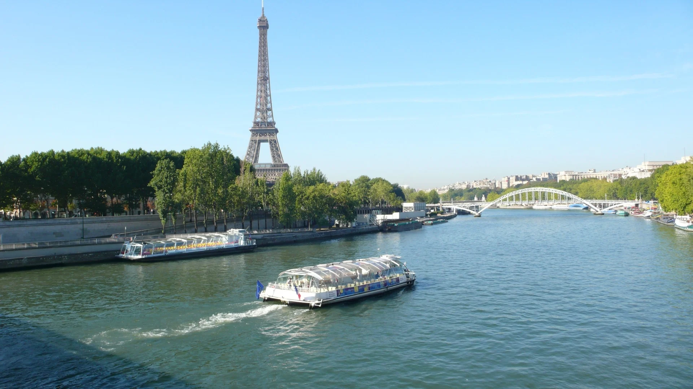
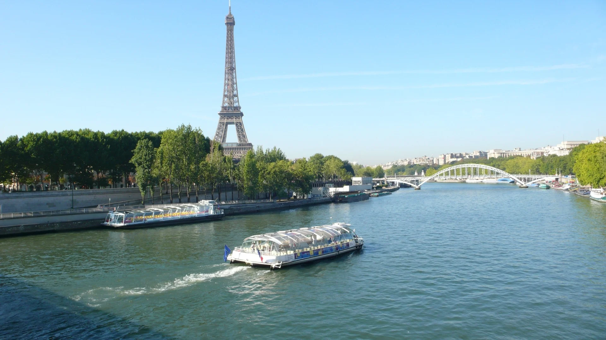
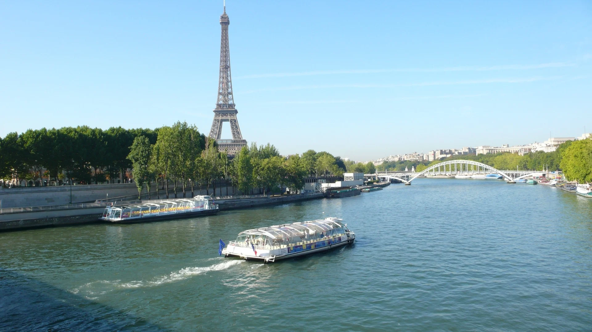

Paris in Pictures

 


Paris, the city of lights, is renowned for its breathtaking architecture, vibrant culture, and world-class cuisine. Its romantic ambiance and rich history make it a must-visit destination.

Experience Paris from the water with a scenic cruise along the Seine, passing under historic bridges and past illuminated landmarks.

Explore the artistic heart of Paris, visiting Sacré-Cœur Basilica and the charming streets that inspired famous artists.

Did you know? Paris was originally a Roman settlement known as Lutetia, founded in the 3rd century BC!
| Season | Highlights | Crowd Level |
|---|---|---|
| Spring (Mar-May) | Flower blooms, mild weather, outdoor cafes | Moderate |
| Summer (Jun-Aug) | Long days, festivals, rooftop bars | High |
| Fall (Sep-Nov) | Cool weather, fewer crowds, cultural festivals | Low-Moderate |
| Winter (Dec-Feb) | Christmas markets, ice skating, cozy bistros | Low (except holidays) |
Visit the official Paris tourism website for more details: Explore Paris